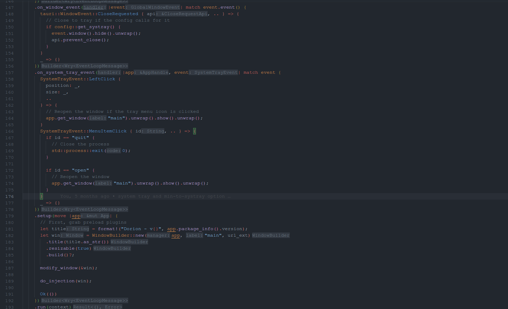
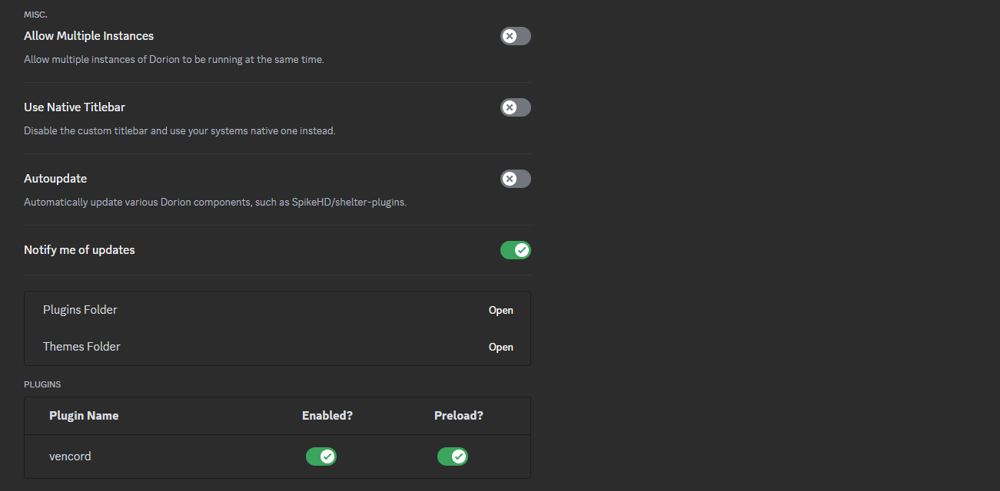

Built with Rust on top of the Tauri library, Dorion uses your systems integrated
Webview implementation. This means Dorion has a tiny installation size (~10mb) and works portably on Windows 11
and newer versions of Windows 10.
Linux uses WebkitGTK, and MacOS uses WKWebview.

With it's list of settings, Dorion can do things like block all telemetry and hot-switch
between regular, Canary, and PTB Discord clients.
